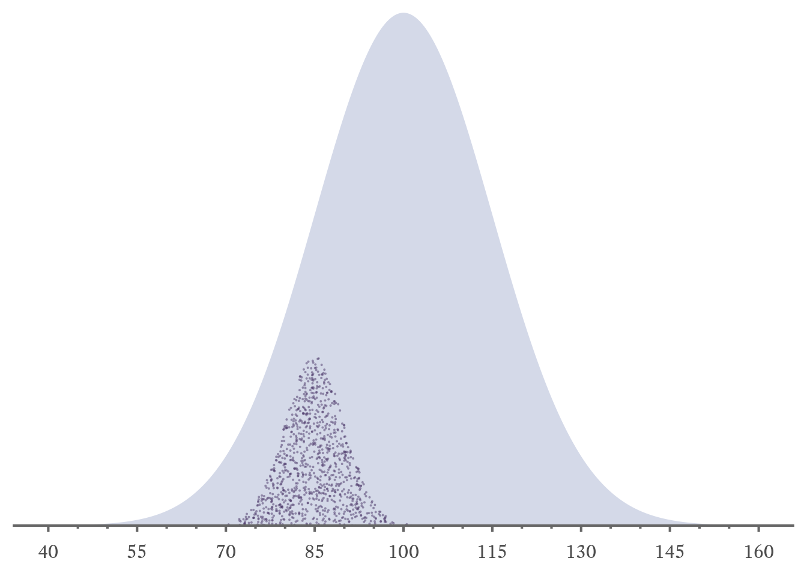

12 Reliability
A psychometrically sound measure is both reliable and valid. Reliability and validity are multidimentional concepts. There are different kinds of reliability and validity, and each aspect potentially can be anywhere between zero and perfect.
Although physicists have been able to measure some quantities with extraordinary precision, they know that perfect measurement will elude them forever. Physical quantities like length, mass, temperature, and time are always measured with at least some amount of error (Taylor, 2022, pp. 4–5). Indeed, Heisenberg (1927) proved that the act of measurement itself disturbed physical systems such that the more accurately some quantities were measured, the less certain other aspects of the system could be measured. For example, the act of measuring a particle’s position accurately makes the measurement of the particle’s momentum less certain, and vice versa.
There are no psychological measurements with anywhere near the same level of precision that is possible in the physical sciences. Measurement error is not only always present in psychological measures, it is always consequential. For example, IQ tests, whatever the controversies that surround their use, are among the most reliable measures of psychological traits we have. Yet, IQ estimates for individuals can only be narrowed confidently to an interval that is still fairly wide, usually around 10 points (two-thirds of a standard deviation).
12.1 True Scores
In psychological measurement, there is no way to know what a measured value truly is. Indeed, psychological attributes are in constant flux. Most changes occur naturally in real time, but sometimes psychological variables respond to attempts to measurement them. That is, psychological measurements have carryover effects, some of which enhance performance (i.e., practice effects). If people are asked to repeat a task during testing, they can learn how to do it more accurately or more quickly. Any carryover effect that worsens performance is referred to as a fatigue effect. Sooner or later, people tire of repeated testing, and they become unable or unwilling to perform to the best of their ability. Fatigue effects are still called fatigue effects even when performance worsens for reasons other than literal fatigue (e.g., boredom or annoyance).
Although carryover effects can be minimized, they cannot be eliminated entirely. To understand the consistency of measurements, psychologists employ a employ a useful fiction. Imagine that we could rewind time so that we could measure things with the same measurement instrument as many times as wanted with no carryover effects. Because time is rewound, people never learn or tire between measurements. They experience each measurement as if it were the first time. That is, each new measurement is completely independent of all previous measurements. The average of all such hypothetical measurements is called the true score. The term true score is something of a misnomer. Notice that the definition requires that we use the same measurement instrument (i.e., test, device, or questionnaire) every time. Any flaws in the in measurement instrument are passed along to the true score. Averaging can cancel out random errors, converging on a specific value. Averaging does nothing to correct persistently wrong answers. That is, the average of many biased measurements is itself biased.

12.2 Retest reliability
12.3 Alternate-form reliability
Split-half reliability
Internal consistency
- Cronbach’s Alpha
- McDonald’s Omega
Conditional reliability (IRT)